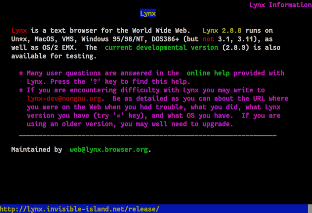

Lynx
Lynx is a text browser for the World Wide Web.
Spyware Level: Not Spyware
Lynx makes no unsolicited requests at all.
It is also fully libre software under the GPLv2 license.
Further Reading
This article was created on 4/6/2020
This article was lasted edited on 10/7/2020
If you want to contribute to this website, you can always make a pull request.
All contributions must be licensed under the CC0 license to be accepted.